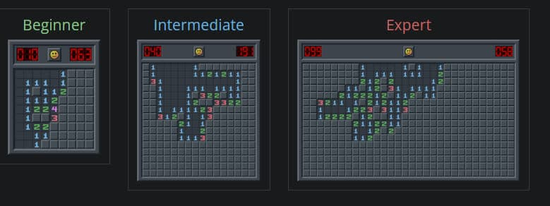

Minesweeper Project
We are all familiar with the Minesweeper game. In this project, you are
asked to simulate this game in the console.

Rules
The rules of Minesweeper are very simple. The game board is divided into cells, with mines randomly
distributed in some of them.
Initially, we don't know which cells contain mines or are safe (unknown state). To win, you must reveal the
status of all the cells.
The number on each cell represents the number of mines in the neighboring 8 cells. Using this information,
you can identify safe cells
and flag cells that contain mines.
You can try the game from this
link.
Required Structures
Player Structure:
Username
Number of Wins
Number of Losses
Game Board Structure:
Number of Rows
Number of Columns
Number of Mines
An array of all players (Player Structure)
In addition to these structures, you can create and use other structures if needed.
Game Menu
In the initial game menu, there are three options:
Start New Game, View High Scores, and
Exit the Game.
The user selects an option to proceed to the respective section.
Display the menu when the user makes a choice. You can implement the option selection however you prefer,
such as by selecting a number or using the up/down keyboard keys.
After choosing to start a game, three other options become available for the user to choose from:
Easy (Board size 9x9, 10 mines)
Medium (Board size 16x16, 40 mines)
Hard (Board size 16x30, 99 mines)
After exiting the game, all player data (including username and win/loss count) is saved to a file, and upon
restarting, the data is read from the file and loaded into the program.
Initial Game Setup
The game board is represented as a matrix. This matrix, based on the user's choice, has mines randomly
placed in some cells.
(You can represent the presence of a mine in a cell with a number.) Then, the remaining cells should display
the number of neighboring mines.
(The 8 cells that share a side or corner with this cell.)
Running the Game
When the game starts, the game board should be displayed to the user. At any turn in the game, the user has
four options:
1. Reveal a cell
2. Flag a cell
3. Remove the flag from a cell
4. Exit the game
If the first three options are selected, the user should be asked for the coordinates of the cell, and the
corresponding action will be performed.
If the exit option is selected, the game ends and returns to the main menu.
Cell Statuses:
During the game, each cell will have one of three statuses:
Hidden: Instead of the cell value, a hidden character (like *) is
displayed.
Revealed: Revealed cells without mines display a number showing how many adjacent mines there are.
Flagged: Instead of the cell value, a flagged character (like ^) is
displayed.
The game ends when all non-mine cells are revealed, or the user selects a mine cell and loses the game.